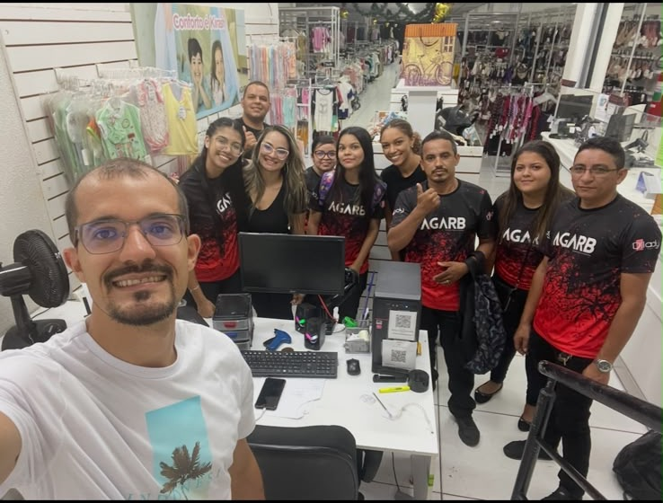
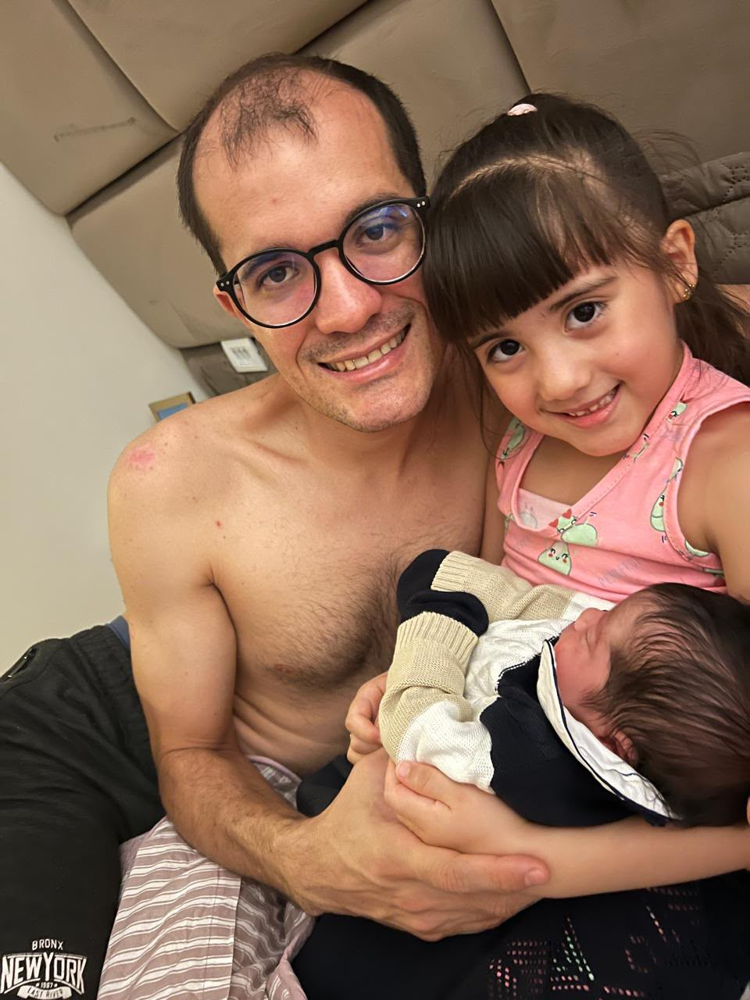
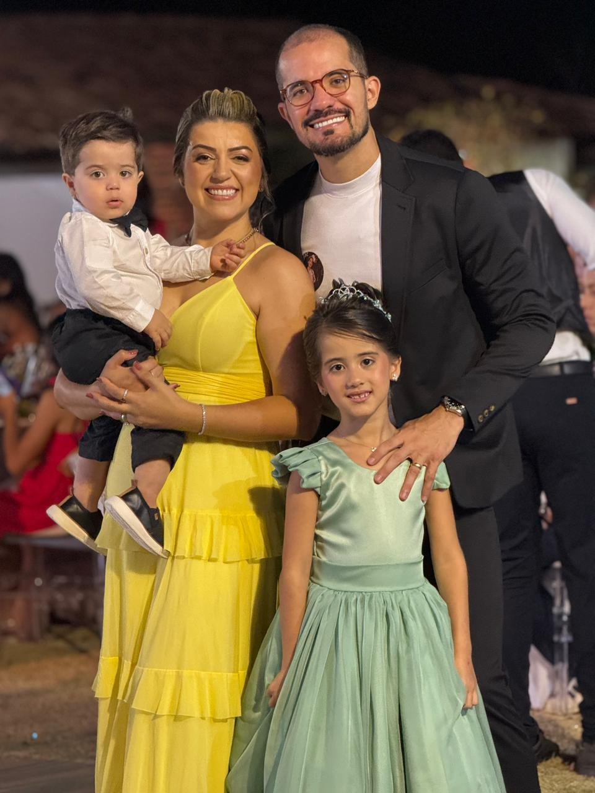
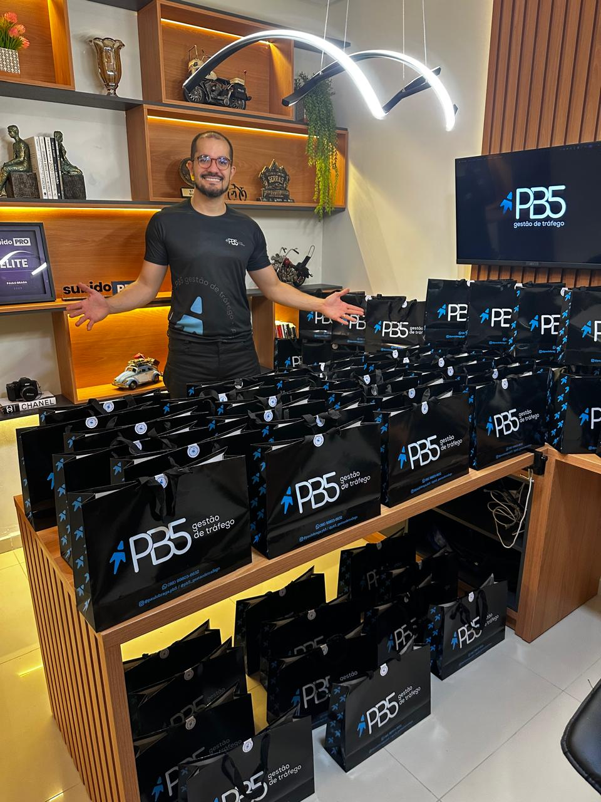

Transmissão recebida
UMA CARTA
DO FUTURO
ANO 2044
Dezoito anos à frente.
Tem uma coisa que vocês só
iam descobrir daqui a 18 anos.
E eu não quis esperar tudo isso pra contar.
E como tudo na nossa família
sempre foi alegre,
eu quis fazer de um jeito divertido.
DO JEITO QUE
O PAPAI AMA:
com um acrônimo.
Como vocês estão hoje
no evento do Subido Pro,
eu vou usar essa palavra tão querida pra demonstrar tudo o que vocês me ensinaram.
S
Sabedoria
Vocês sempre foram estudiosos, curiosos, inquietos. Nunca pararam de aprender. E isso passou pra mim: eu cresci querendo entender as coisas. Obrigado por terem me ensinado a nunca achar que eu já sei o bastante.
U
Usufruir
Vocês me ensinaram que não basta conquistar, tem que aproveitar. Correr atrás do que a gente quer, sim, mas viver o que a gente conquistou também. Muita gente aprende só a primeira metade. Vocês me ensinaram as duas.
B
Bondade
Eu vi vocês serem bons com quem estava perto e com quem vocês nem conheciam. Sem plateia, sem ninguém olhando. Foi assim que eu aprendi que bondade não é o que a gente faz quando estão vendo.
I
Integridade
No trabalho, com as pessoas à sua volta, dentro de casa e com quem a gente nem conhece. Essa é uma das maiores lições que vocês me deram.
D
Deus
O pilar da nossa família desde antes de eu nascer, e que me acompanhou durante todo o meu crescimento. Soube que vocês levaram até um padre para abençoar o Subido ao Vivo. Obrigado por terem me ensinado a ter fé.
O
Ousadia
Vocês nunca tiveram medo de revolucionar, de começar algo novo, de trazer o melhor. Ou melhor: tiveram medo, e foram do mesmo jeito. Foi vendo isso que eu aprendi que quem define o meu teto sou eu.
P
Presença
Vocês tinham todos os motivos do mundo pra trabalhar mais um pouquinho. E escolheram estar. Nos jogos, nos jantares, nas viagens, nas conversas bobas. Obrigado por terem escolhido estar.
R
Risadas
Papai, a sua gargalhada é a trilha sonora da minha infância. Dava pra ouvir do outro lado da casa. É a risada mais icônica que eu já vi, e sempre que você sorri, me dá vontade de sorrir também.
O
Obrigado
Por serem quem vocês são e por fazerem tudo que vocês fizeram. Todos os sacrifícios, todo o trabalho, todo o tempo dedicado. Amo vocês. Nos encontramos daqui a pouco.
Vocês transformaram
a vida de muita gente.
Mas a vida que vocês mais
transformaram foi a vida
do seu filho, Augusto.
Obviamente,
a gente não consegue
vir do futuro.
Mas tudo isso é o que a gente
enxerga em vocês hoje.
E é o que a gente deseja, do fundo do coração, que o pequeno Augusto tenha na vida.
Ele vai ter motivos de sobra
pra se orgulhar de vocês.
Um dia, na escola
“AH, MEUS PAIS
TRANSFORMAM
VIDAS.”
E essas vidas
não são um número.
Elas têm nome, têm rosto, e quatro delas estão aqui hoje.
Ao vivo
O LEGADO DO
GRUPO PERMANEO
Antes e depois de vocês entrarem na minha vida
Nemora Schuh
Antes
Chefe de gabinete na política, incomodada de viver à sombra da carreira de outra pessoa. Em 2021 veio o diagnóstico de câncer.
Depois
Trabalhou entre uma quimio e outra. Pediu demissão e foi ao primeiro Subido ao Vivo já pós-tratamento. Hoje é Master e consultora.
Antes e depois de vocês entrarem na minha vida
Paulo Braga
Antes


Doze anos na loja de roupas da família. A pandemia desarrumou tudo, e o segundo filho vinha a caminho.
Depois


A esposa comprou o ingresso do Subido ao Vivo de surpresa, parcelado. Hoje a PB5 fatura quase R$ 100 mil por mês.
Antes e depois de vocês entrarem na minha vida
Rafael Lemos
Antes
Um acidente o deixou quebrado no hospital. Foi desligado do Exército depois de anos de serviço, antes mesmo de se recuperar. Precisou se reconstruir do zero, física e financeiramente.
Depois
A irmã o apresentou ao tráfego pago e montaram a operação juntos. Veio oportunidade também para a esposa, e a família trocou o Rio de Janeiro pelo interior da Bahia.
Mas ainda
não acabou.
A gente começou pelo futuro, foi ao passado, voltou ao presente. E vai terminar no futuro de novo.
Vocês não apenas construíram
condições para dar uma vida boa
ao Augusto e à sua família.
Existem tantas outras crianças e outras famílias que também terão uma vida boa por conta de vocês.

Pedro Choran
Pedro Choran
Pedro Choran

Cecília, Valentina e Miguel
Pedro Choran
Cecília, Valentina e Miguel
Pedro Choran
Cecília, Valentina e Miguel

José
Pedro Choran
Cecília, Valentina e Miguel
José
Pedro Choran
Cecília, Valentina e Miguel
José

Lucca e Luan
Pedro Choran
Cecília, Valentina e Miguel
José
Lucca e Luan
Pedro Choran
Cecília, Valentina e Miguel
José
Lucca e Luan
Pedro Choran
Cecília, Valentina e Miguel
José
Lucca e Luan

Pedro e Letícia
Pedro Choran
Cecília, Valentina e Miguel
José
Lucca e Luan
Pedro e Letícia

Henri e Bella
Pedro Choran
Cecília, Valentina e Miguel
José
Lucca e Luan
Pedro e Letícia
Henri e Bella
VOCÊS JÁ
TRANSFORMARAM
A VIDA DE QUEM
AINDA NEM NASCEU.
Em nome de todos os Subidos Pro
MUITO
OBRIGADO.